Iconoteka Press Kit
Download Press KitOne Line10 words
Iconoteka is a universal, open-source library of precisely designed pictograms.
One Sentence31 words
Iconoteka is a free, open-source icon library under the MIT License: 1,300 icons in 7 weights from Thin to Bold, in stroke and fill, on iconoteka.com and in a Figma plugin.
One Paragraph61 words
Iconoteka is a free, open-source icon library released under the MIT License. It holds 1,300 icons in 7 weights from Thin to Bold, in stroke and fill, 14,970 shapes in all. The icons are on iconoteka.com, in a Figma plugin, and in a GitHub repository that also carries an MCP server for AI assistants and packages for React, Vue and Svelte.
One Page163 words
Iconoteka is a free, open-source icon library released under the MIT License, so it can be used in personal and commercial work, and shipped inside closed-source products.
It holds 1,300 icons in 7 weights from Thin to Bold, in stroke and fill, 14,970 shapes in all, sorted into 23 categories and reachable by 7,716 keywords. Every icon is drawn on a 24-point grid, with optical compensation applied by hand: deliberate overshoots, density-based weight modularity, a 5° geometric angle rule and tiered corner rounding. From Thin to Bold, from a user icon to a street sign.
The icons are on iconoteka.com, where they can be searched, restyled and saved as SVG, PNG or PDF. A Figma plugin places them on the canvas and restyles icons already there. A GitHub repository carries the vector sources, an MCP server for AI assistants, and packages for React, Vue and Svelte, all under the MIT License.
Iconoteka is designed by Oleg Turbaba, Brand Design Director at Clay Global.
Author28 words
Oleg Turbaba is a multidisciplinary designer specializing in the intersection of brand identity, digital products, and visual experiences. Brand Design Director at Clay Global and author of Iconoteka.
Contact
For enquiries, collaborations, interviews, or sponsorships, get in touch.
Iconoteka Brand


Products


Author


Iconoteka in Use
Automation Workflow

Bus Stop Sign

Waste Sorting Bins

Interface Components

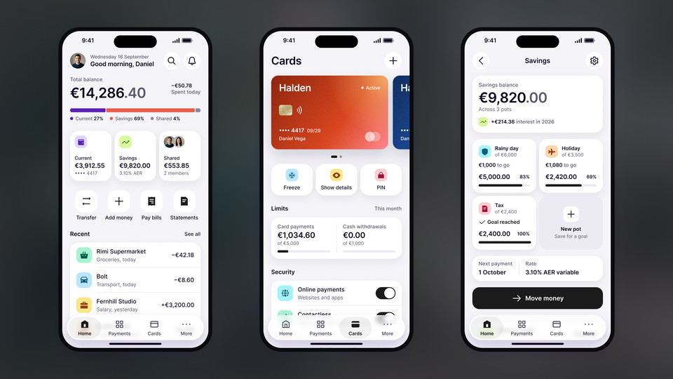
Banking App Screens

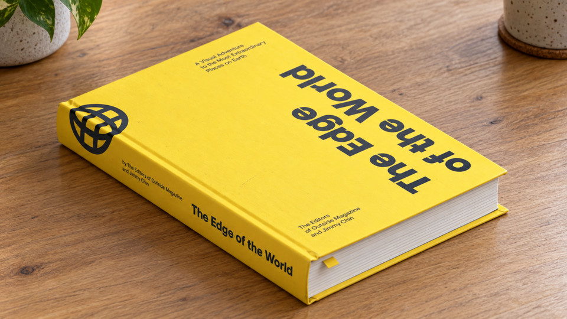
Book Cover

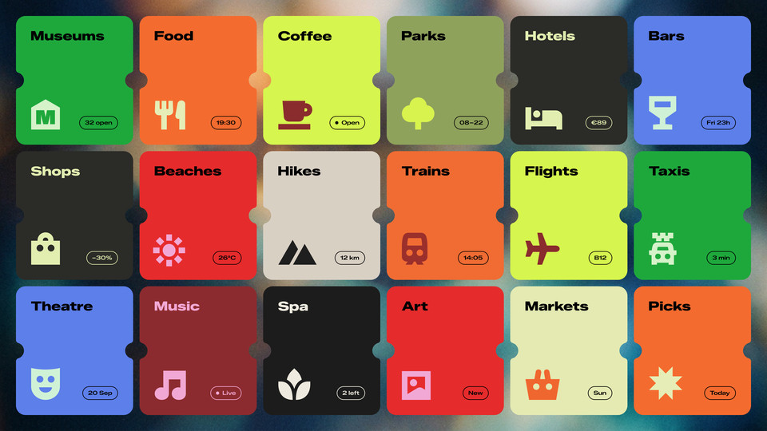
City Guide Tiles

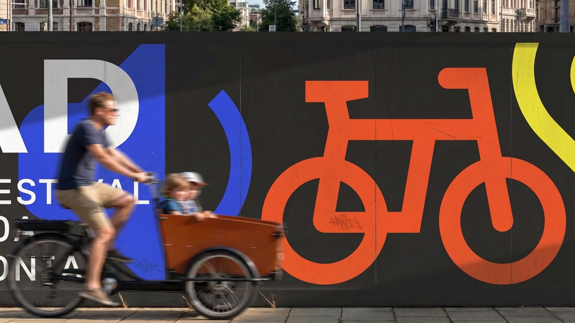
Festival Hoarding

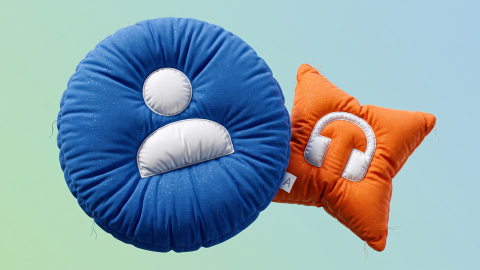
Stitched Pillows

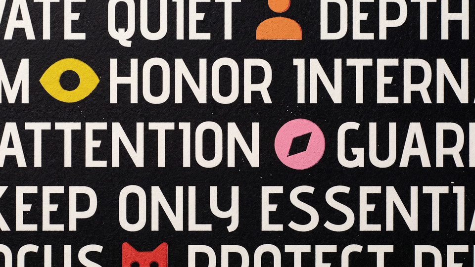
Hand-Painted Wall

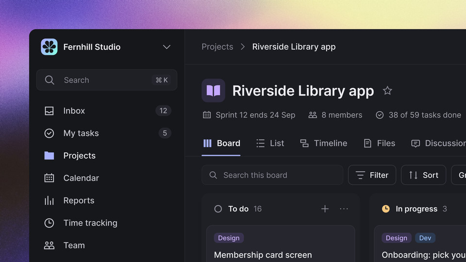
Project Management App

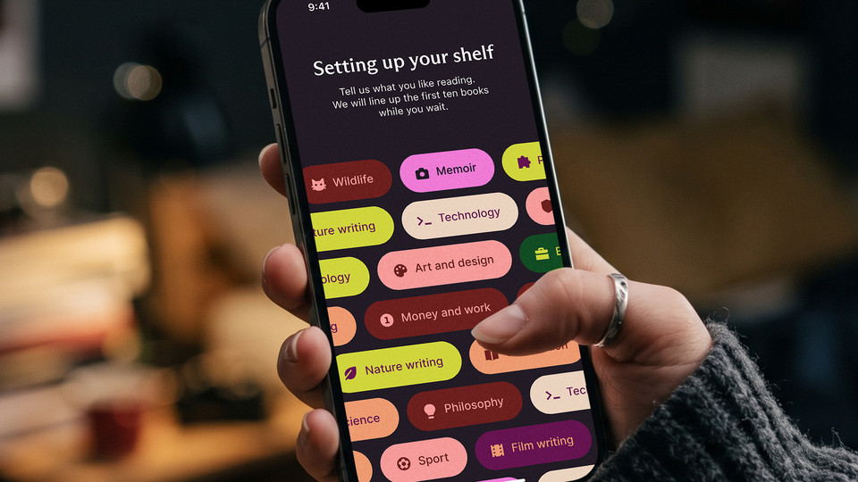
Reading App Onboarding

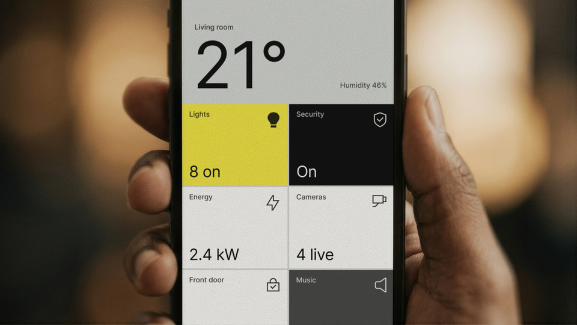
Smart Home App

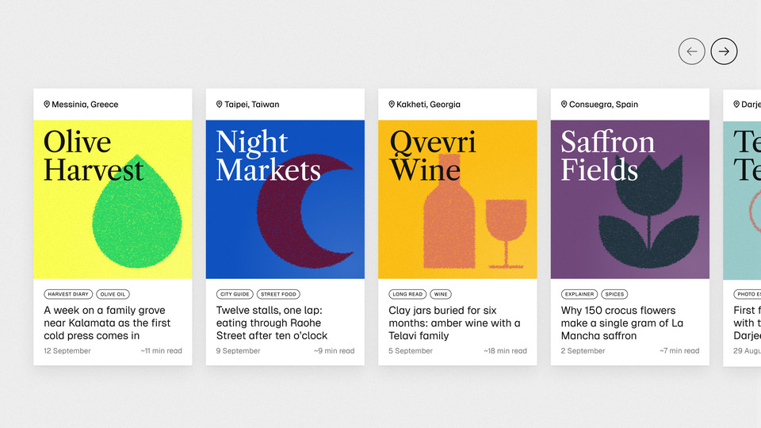
Travel Story Cards

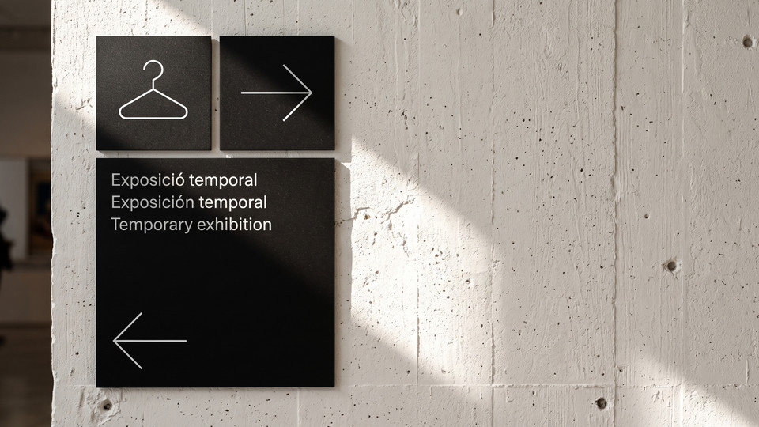
Museum Wayfinding

Using These Assets
The images and video show Iconoteka applied in interfaces, print and environmental graphics. They may be reproduced in articles, reviews and presentations about the library. Please credit Oleg Turbaba.
The Icons Themselves
The library is released under the MIT License, so the icons can be used in personal and commercial work, shipped inside closed-source products, and reproduced in print. Crediting Iconoteka is appreciated, and permission is never needed.